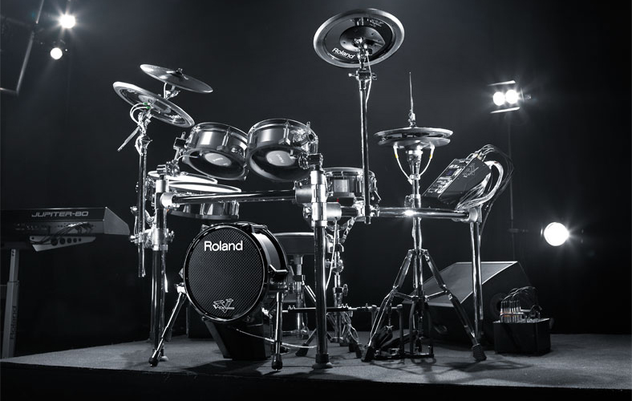
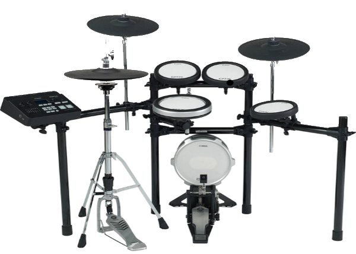

סוגי מערכות תופים :
מערכת תופים אלקטרונית
תופים אלקטרוניים נקראים גם V-drums, והם תופים לכל דבר, אולם במקום שהצליל ייווצר באמצעות תנודה אקוסטית, הוא נוצר על ידי חיישנים המתרגמים את עוצמת המכה לצליל התוף או המצילה. התופים האלקטרוניים הגיעו לעולם בתחילת שנות ה-80, ואמנם רק בשלבים מאוחרים יותר הוא באמת נכנס לשימוש בקרב הציבור הרחב.
התופים האלקטרוניים בנויים ממשטחים, שאליהם מחוברים חיישנים, הקולטים את עוצמת המכה ומתרגמים אותה לאות חשמלי. אות זה מועבר אלינו כצליל דגום של תוף או מצילה. במערכות תופים אלקטרוניים המשטחים עשויים בדרך כלל מגומי. במערכות חדישות יותר, המשטחים עשויים מאותם "עורות" (יריעות פלסטיק, שהחליפו את יריעות העור האמיתי ומכאן שמם) המשמשות גם למערכת תופים אקוסטית והמקנה להם על כן תחושה של נגינה על תוף "אמיתי". במערכות אלה ניתן גם לכוון את מתיחותו של משטח ה"עור", דבר המשפיע על צליל התוף. שתי החברות העיקריות המייצרות תופים אלקטרוניים הן Roland ו-Yamaha. Roland היא החברה שמוכרת את מספר התופים הגדול ביותר בעולם כיום והיא מייצרת בין שאר מוצריה גם תופים אלקטרוניים, הידועים באיכותם.

בתמונה: מערכת אלקטרונית של Roland
ניתן לכוון כל תוף בנפרד כך שייצור צליל אחר. יתרון נוסף לתופים האלקטרוניים הוא משקלם הנמוך, המאפשר ניידות גבוהה. בדרך כלל ניתן גם "להחליף" בלחיצת כפתור את צליל מערכת התופים, כך שתדמה מערכת אקוסטית שונה. במערכות המקצועיות יותר ניתן לכוון מעבר לצליל הבוקע מכול תוף את גודל המצילה או התוף, סוג העור, גודל החדר ועוד משתנים רבים נוספים. יתרון נוסף הוא שניתן להחליף ולשנות את הצלילים במודול המרכזי לפי רצון המשתמש, ויתרון משמעותי נוסף הוא שניתן לחבר אוזניות למודול ורק מי שמאזין דרך האוזניות ישמע את הצליל המופק – וזה מונע בעיות רבות בהקשר של רעש.
עם כל זה, כמובן שלתופים האלקטרוניים יש גם חסרונות: קודם כל נתחיל עם זה שהמראה הוא לא הכי מרשים ביחס לתופים האקוסטיים. שנית, יש סיכון בתקלות שונות כיוון שבסופו של דבר מדובר במוצר חשמלי. תחושת הנגינה לא זהה למערכת תופים רגילה. בנוסף, המערכות האלקטרוניות עולות במחיר (משמעותית) יקר יותר מאשר מערכות אקוסטיות. גם חלקי חילוף ותיקונים מגיעים לעלויות יקרות יותר, ולפעמים תהליך החלפת חלק מסוים הוא מורכב. הבחירה אם לבחור בתופים אלקטרוניים או בתופים אחרים תלויה ביכולות הכספיות, וכמובן בחלל שבו התופים עתידים להיות. הדבר גם תלוי בצרכי המשתמש. האם זה לצורך אימונים, האם לצרכי הקלטות, וכו'. הכל תלוי במשתמש.  מערכת אלקטרונית של Yamaha. שווה את ההשקעה?